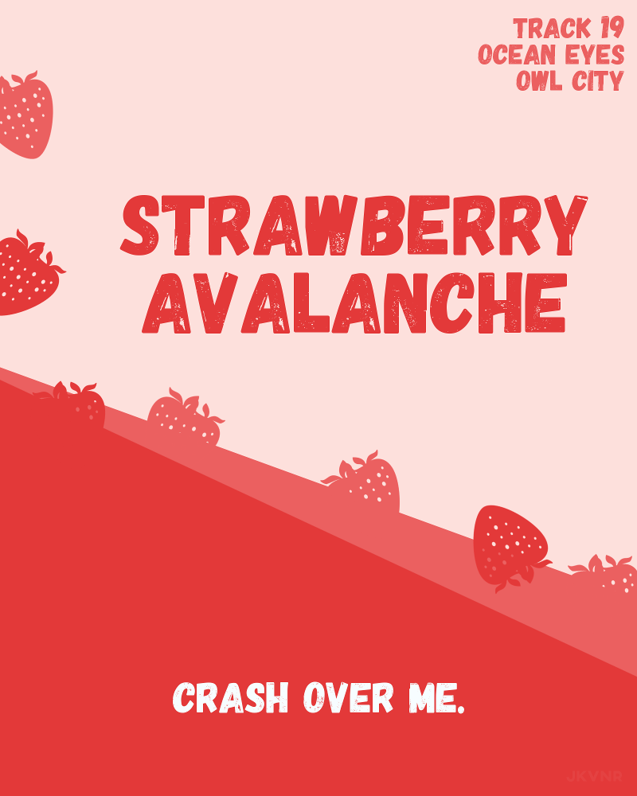
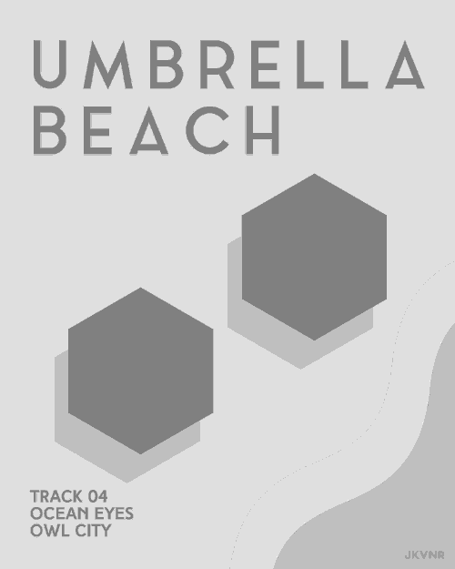

The Owl City posters were my first attempts at design. The idea was simple: turn an Owl City song into a poster using GIMP and some free fonts. It was once a daily thing until I started university. I cringe when I look back at these but it's also good to remind myself of how much I learned since making these.
